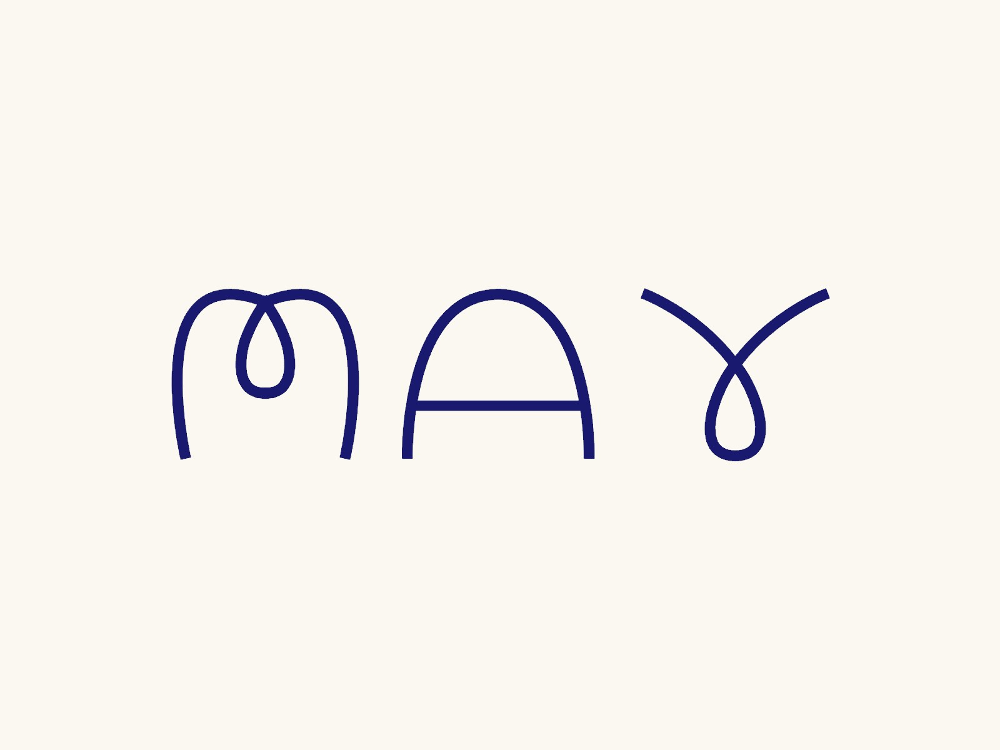
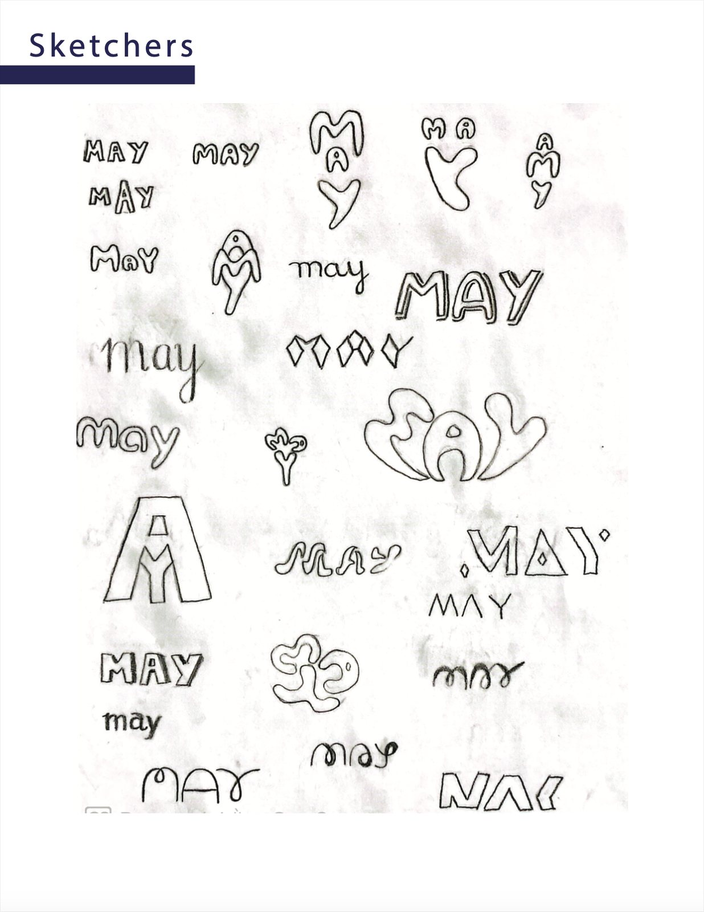
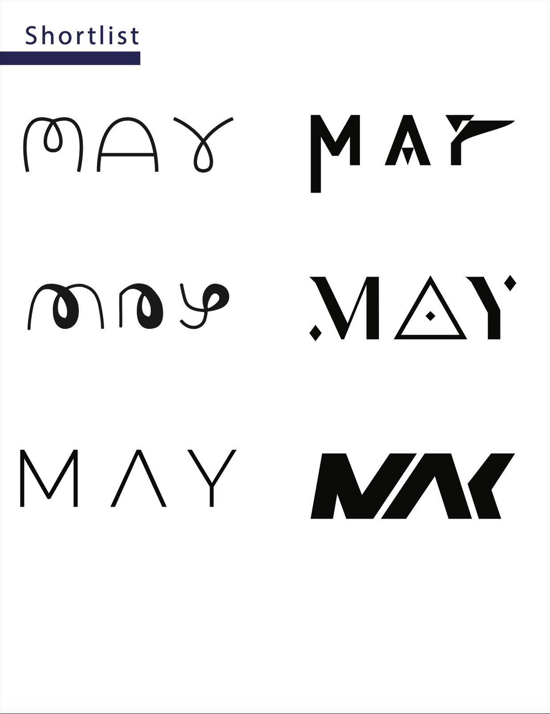
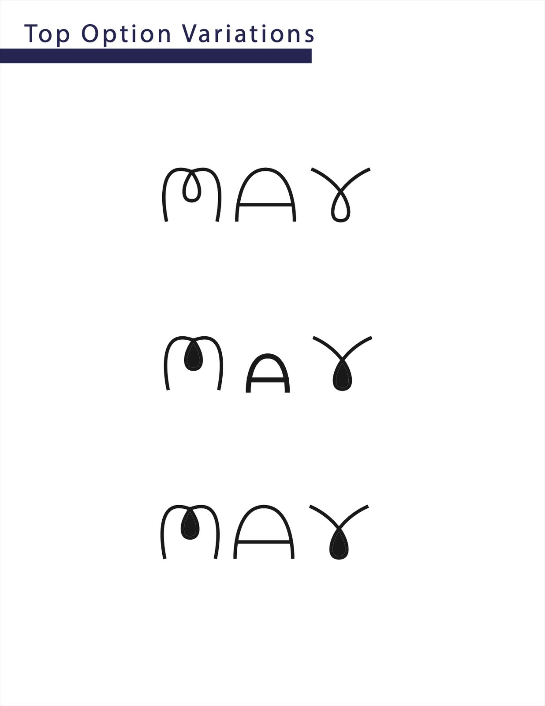
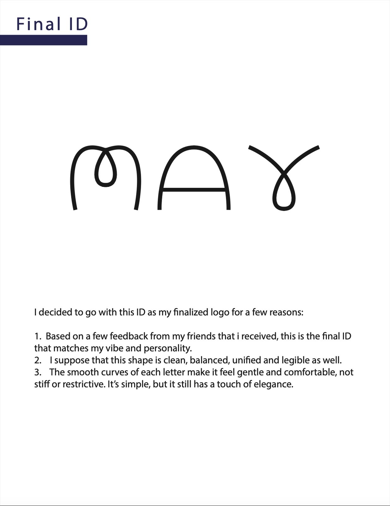

Personal Identity · Logo Design
My own monogram — a custom hand-drawn “May” wordmark expressing three words I designed to: Magnetic, Airy, Yielding. It's the mark this entire portfolio is built around.

Role
Everything — solo project
Tool
Adobe Illustrator
Output
Logo + colour variations + rules
Keywords
Magnetic · Airy · Yielding
Overview
This is the personal identity behind everything I make. I wanted a monogram that captured my personality — simple, soft, gentle and free — and could quietly tie together a body of work that spans branding, UX, illustration and motion.
The problem
A personal mark has to do a lot with very little: feel like me at a glance, work at any size, and stay flexible across many contexts. The challenge was distilling personality into a few continuous lines without it feeling stiff or generic.
Approach
I iterated from sketches to a shortlist to refinement, guided by honest feedback from friends. The final “MAY” wordmark uses smooth, continuous curves so it reads as gentle, comfortable and unconstrained — clean, balanced and legible, with a quiet touch of elegance.
Midnight Blue #191970 grounds it with depth and trust, while Amber #FFBF00 adds warmth and magnetism. Knockout versions keep it flexible over images, patterns and coloured backgrounds — the same palette you're looking at right now.
#191970#FFBF00Process




Results & impact
The final identity ships with primary and knockout colour variations and clear usage rules — and it now functions as the live foundation of this portfolio's entire design system.
More than a logo, it gives me a consistent personal brand that makes my work recognizable and memorable to clients and employers.
Reflection
Honest feedback shaped the final mark, and the build taught me real Illustrator craft — the Pen Tool, symmetry and disciplined layer logic. Most of all, designing for myself clarified exactly what I value in design: warmth, simplicity and freedom.